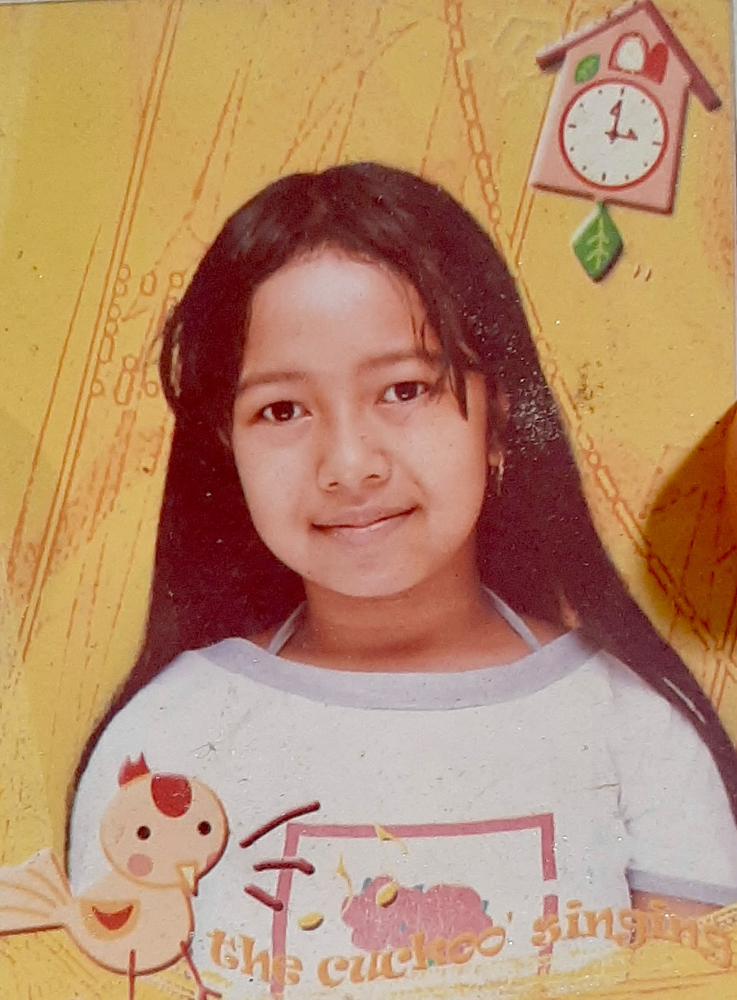
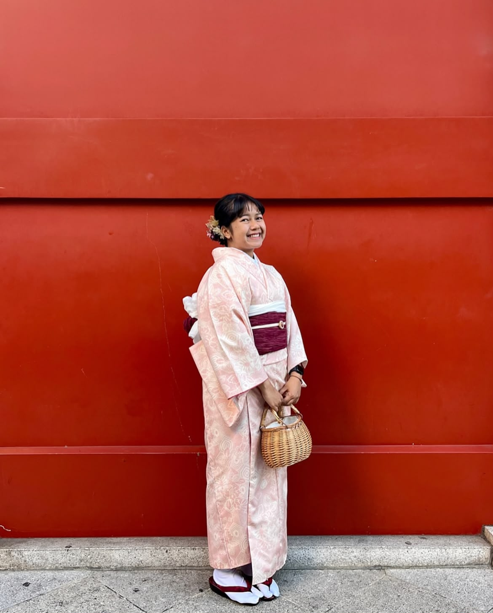
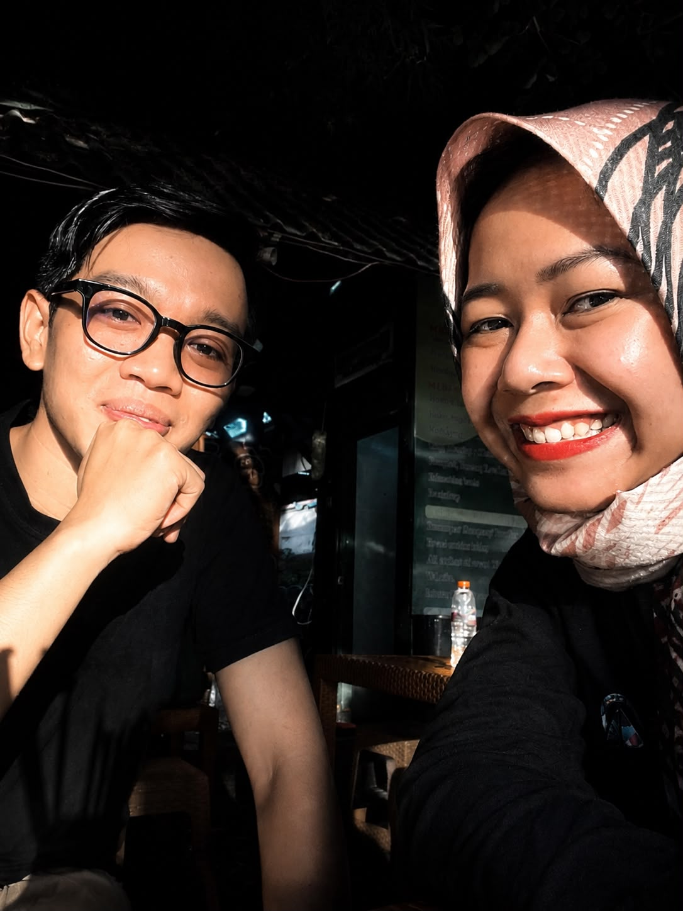
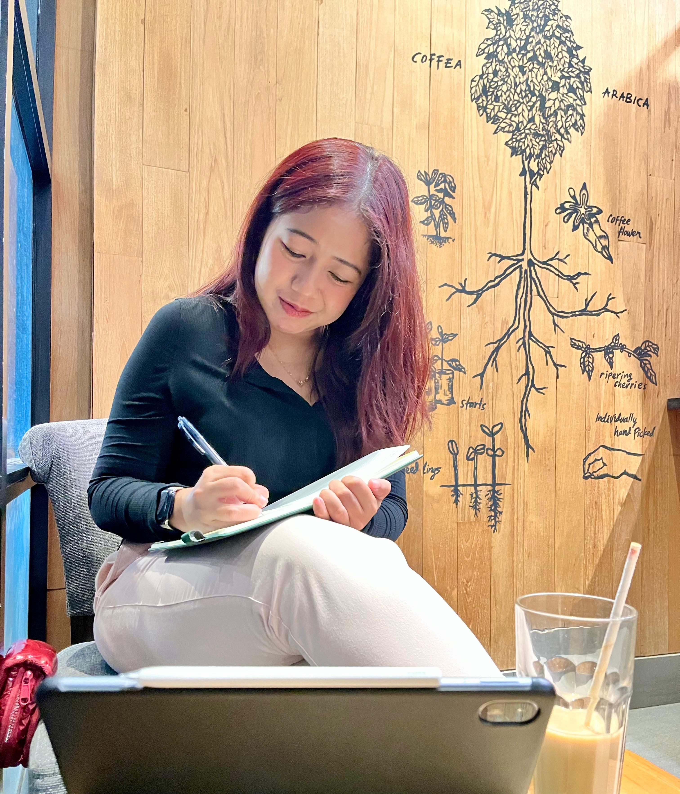
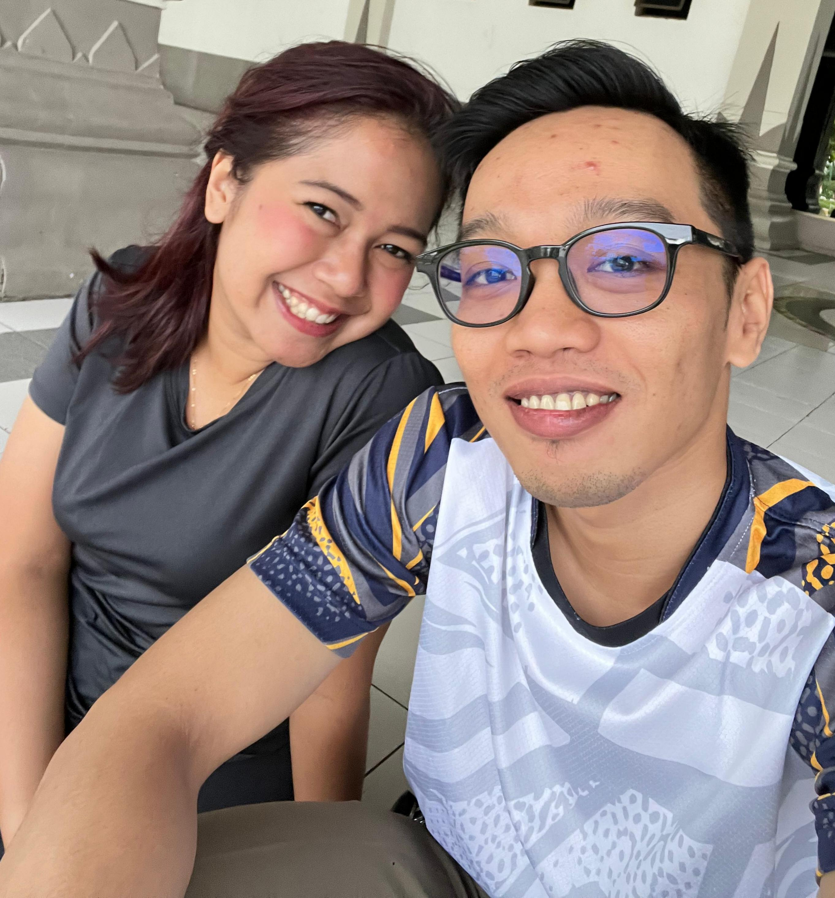
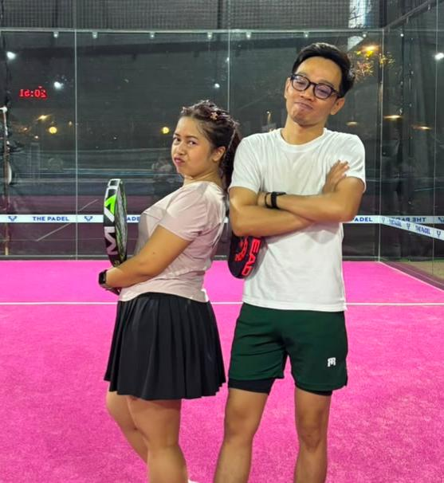
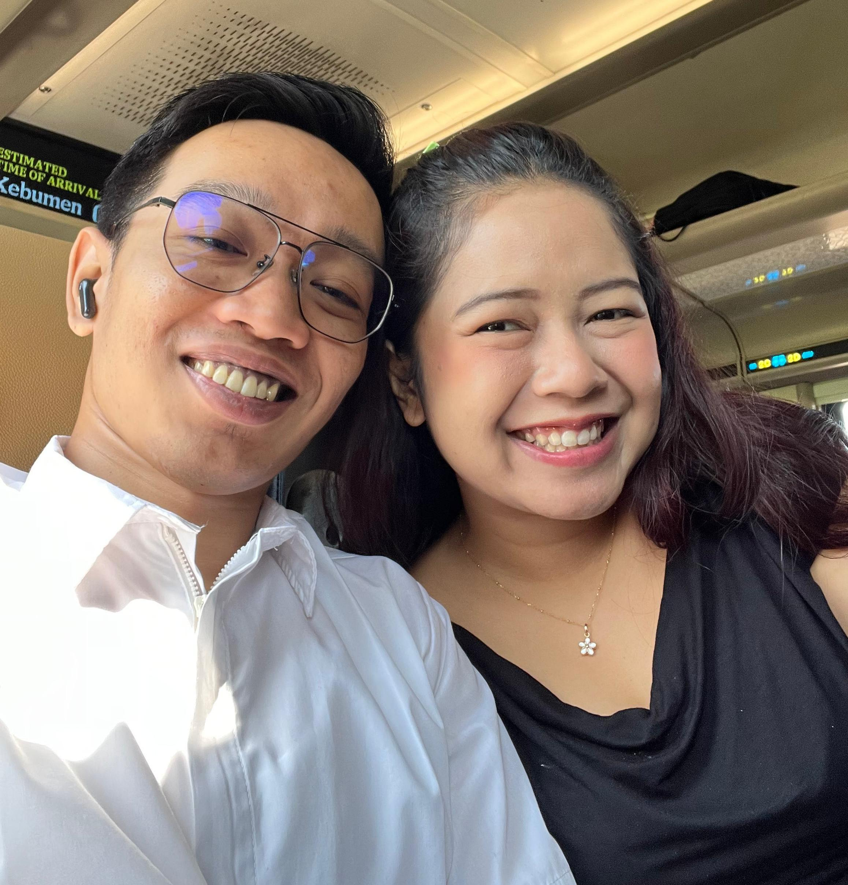
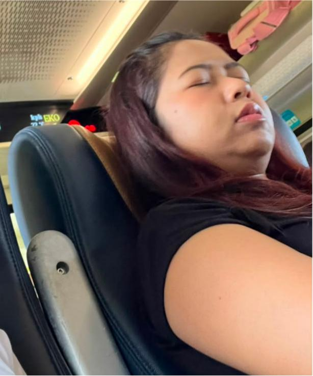
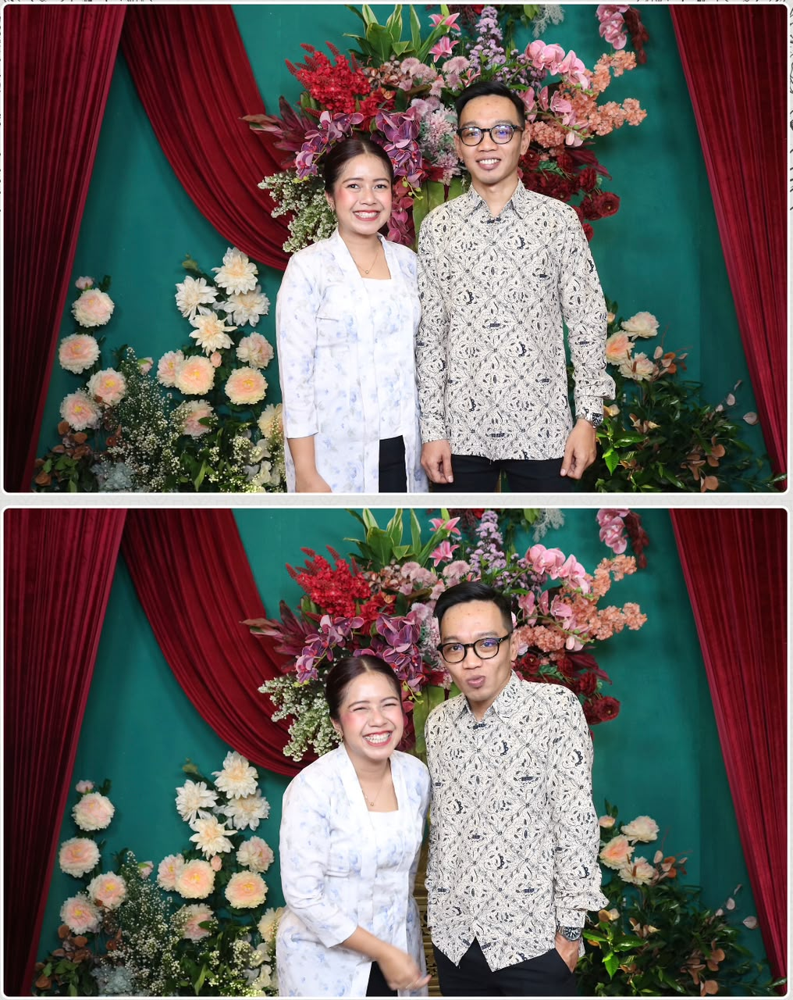

CLASSIFIED ARCHIVE
CASE FILE #0701
This archive contains one individual who unexpectedly changed someone's life.
CLASSIFIED ARCHIVE
This archive contains one individual who unexpectedly changed someone's life.
> Booting archive...
> Accessing encrypted memory...
> Recovering evidence...
> Decrypting archive...
> Verifying identity...

RECOVERED MEMORY
SUBJECT STATUS
Identity Successfully Verified.
PRIMARY DOSSIER
Also known as: Anin · Nindya · Cece
Communicative. Elegant. Consistent.
Access Granted.
PERSONAL OBSERVATION
Quiet. Elegant. A little difficult to read.
Warm. Talkative. Friendly. Easy to laugh.
Communication. Consistency. Quiet support.
She always looks cheerful. Yet sometimes, she quietly carries disappointment no one else notices.
BEHAVIOURAL REPORT
Somehow, she can always guess what I'm thinking.
No stirring. Just one sip.
One bite. Every time.
Food first. Camera first. Then eat.
Through small things. Almost silently.
Coffee. Trains. The color red. Somehow... everything reminds me of her.
FAVORITES DATABASE
RECOVERED EVIDENCE

Some people don't need to say anything to command a room. Just being there is enough.

In a world full of noise, sitting side-by-side with you was the quietest feeling.
The subtle kind of laughter that effortlessly becomes someone’s favorite memory.

Not every moment needed words. Some were simply meant to be captured and held onto.
Consistent, genuine, and timeless. A frame that speaks for itself.
CASE HISTORY

Two people started talking. Neither knew where the story would lead.

Time passed so naturally that neither of us noticed how late it had become.

Maybe my favorite memory wasn't Jakarta. It was simply being there with you.

You fell asleep on my chest. I gently brushed your hair. The world suddenly felt quiet.

Whatever our relationship looks like today, one thing has never changed.
"Some people don't change your life because they stay forever. Some change it simply because they existed in it."
UNSENT LETTER
I hope this new chapter brings you more peace than worries, more laughter than sadness, and more reasons to genuinely smile.
I hope every prayer you've whispered finds its way to become reality.
May you always be surrounded by people who choose you, respect you, support you, and remind you how valuable you truly are.
May God protect every step, heal every unseen wound, and guide you toward the happiness you deserve.
FINAL STATEMENT
There is no reason to lie to me. I'm way too understanding. I get life. I understand that things happen. Sure, I'll be sad, but I'll get over it.
I will never forget the day I started talking to you without knowing that one day I was going to love you.
So... please just be honest with me.
GRATITUDE
Thank you for coming into my life.
Thank you for making me smile.
Thank you for being so understanding.
Thank you for being one of my biggest supporters.
Thank you for caring, even through the smallest things.
You showed me that love isn't measured by grand gestures.
You are the person who showed me how love truly works.
Whatever our relationship looks like today...
I'm simply grateful our paths crossed.